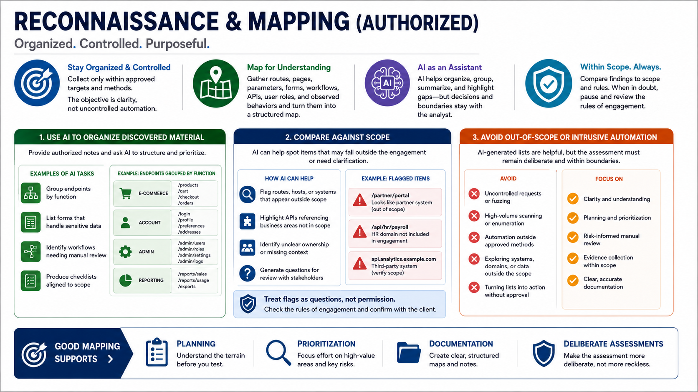

AI-Assisted Recon and Mapping
Connecting to LMS... Progress: in progress

Narration
Reconnaissance and mapping in an authorized assessment should be organized and controlled. The assessor may collect routes, pages, parameters, forms, workflows, API endpoints, user roles, and observed behaviors. AI can help transform that material into a structured map, but the activity should remain within approved targets and methods. The objective is clarity, not uncontrolled automation.
A useful AI workflow is to provide authorized notes and ask for organization: group endpoints by function, list forms that handle sensitive data, identify workflows that need manual review, or produce a checklist aligned to the scope. This can reduce the cognitive load of large applications while keeping the analyst focused on areas that matter.
AI can also help compare discovered material against the scope. If a route appears to belong to an excluded system, or if an API references a business area outside the engagement, the assistant can flag it as a question for review. The analyst should treat that as a prompt to check the rules of engagement, not as permission to proceed.
Avoid intrusive or out-of-scope automation. AI-generated lists can be helpful, but they should not become a launchpad for uncontrolled requests, high-volume scanning, or testing outside agreed boundaries. Good mapping supports planning, prioritization, and documentation. It should make the assessment more deliberate, not more reckless.